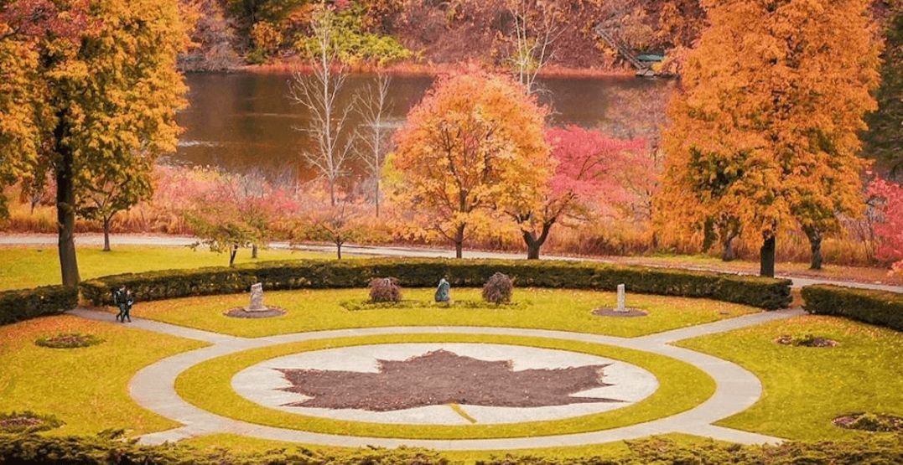
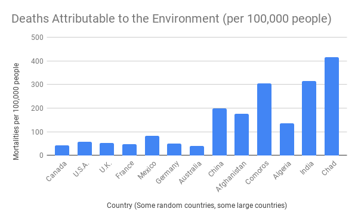

The Benefits of Green Spaces in Urban Areas

Greenspaces, like this one in Toronto, provide greenery in an urban metropolis

There are many parks in Toronto, including High Park, which boost the cities health

As shown here, Canada is very progressive in terms of its environmental mortality rate. Not shone, is the influence parks have in it. For example, 1.4% of Comoros is parkland. 80% of Canada is wilderness (let that sink in) (Source: WHO Data)
Green spaces and parks are beneficial to us and our cities in many ways. One just happens to be that we can have fun and enjoy time in them as well. In addition to this, they also help protect the environment of cities and the health of its citizens. Trees, shrubs and other plants remove smoke, dust and other pollutants from the air, thus helping to “clean” it. On that note, plants can also help us to slow the effects of climate change.According to the Guardian, “tree-planting could sequester” (remove from the atmosphere) “around 1.1–1.6 GT of CO2 per year”. The benefits to our environment that parks contribute are not just limited to the atmosphere. A dense area of plants and trees help to keep the soil together, reducing erosion, and reducing the potential for dust storms, mudslides and flooding. Parks can help us to stay active and healthy as well as protecting the environment we live in and sustaining our cities. It is important that we protect our parks and green spaces.
"The Earth has music, for those who listen" William Shakespeare
Project Evergreen
World Health Organization
US National Library of Medicine (Scholarly Article)
The Washington Post